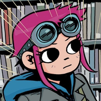
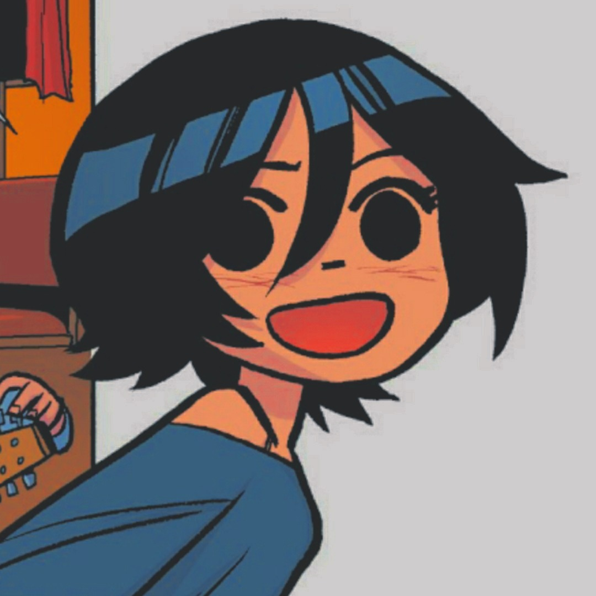
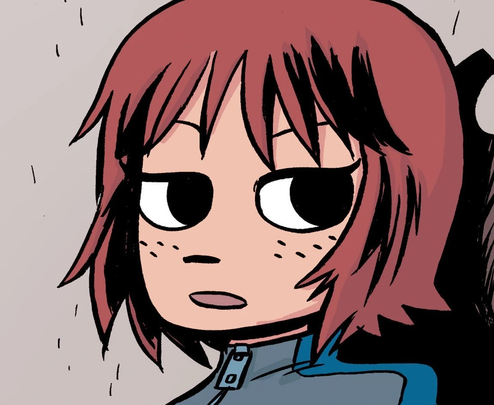
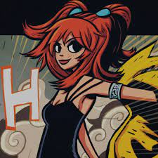

Main Characters
Scott Pilgrim
Scott William Pilgrim is the 23-year-old protagonist. He is the bass player for the band Sex Bob-Omb with his friends Stephen Stills and Kim Pine. He is initially devastated by his break-up with Envy Adams and begins dating Knives Chau, before meeting Ramona. Ramona and Scott begin dating, but Scott is plagued by Ramona's elusive past and her "7 evil exes" led by the mysterious "Gideon", all of whom challenge him in succession for the right to date her.
Ramona Flowers
Ramona Victoria "Rammy" Flowers is a 24-year-old American expatriate from New York, a "ninja delivery girl" for Amazon and Scott's main love interest. She reveals very little and is very guarded about her past in New York City before she moved to Toronto. She is capable of traveling through subspace and has seven evil exes who challenge Scott for her affection. She changes her hairstyle every three weeks and becomes anxious when Gideon is mentioned or brought up.
Wallace Wells
Wallace Wells is Scott's "cool gay roommate". He is 25 years old and first met Scott in college. Wallace is more intelligent, responsible and mature than Scott: he holds down a job and pays for most of their expenses while they lived together as roommates. Most of their apartment's furniture and possessions belong to Wallace and he buys the majority of their groceries.
Knives Chau
Knives Chau is a 17-year-old Chinese-Canadian high-school girl and self-described "Scott-aholic". Scott dates her for a short while, but breaks up with her after he meets Ramona (though he initially "forgets" to break up with her). Initially a quiet, typical schoolgirl, after their break-up, she cuts and dyes her hair and changes her clothing style, hoping to win Scott back by becoming more of a hipster.
Stephen Stills
Stephen Stills is the lead singer, guitarist and "talent" of Sex Bob-Omb. He is 23 years old and went to university with Scott. He is employed at The Happy Avocado vegetarian restaurant as a cook and later helps Scott get a job there as a dishwasher. Stephen is in a tumultuous relationship with Julie Powers, who at one point suspects that he and Knives may have a mutual attraction to one another.
Kim Pine
Kimberly "Kim" Pine is Scott's high school friend and drummer of Sex Bob-Omb. She is 23 years old and was Scott's first girlfriend, whom he "saved" from Simon Lee. The two broke up when Scott's family moved away to Toronto. She has a sarcastic personality and dislikes many people.
Young Neil
Neil "Young Neil" Nordegraf is Sex Bob-Omb's biggest fan. He briefly dates Knives Chau, until she breaks up with him. He is the quietest character and is very apathetic to almost everything.
Envy Adams
Natalie V. "Envy" Adams is Scott's ex-girlfriend who devastates Scott by breaking up with him in college previous to the events of the book. Initially a quiet, mousey girl, she decides to change herself and her image, becoming more callous and aggressive, eventually taking over Scott's band and dumping him. She later reappears, introduced in the series as the lead singer and keyboardist for the popular emerging band "The Clash At Demonhead". Scott describes her original personality as being "nice" and does not understand what she has since become.
The League Of Evil Exes
Matthew Patel
Lucas Lee
Todd Ingram
Roxie Richter
Kyle & Ken Katayanagi
Gideon Gordon